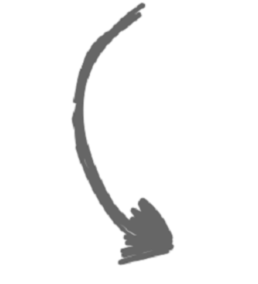

UNSER PROTEIN
Wenn es um Protein geht,denken wir,dass die Quelle
wichtig ist. Alle unsere Rezepte
beginnen mit
tierischem
Eiweiβ - wir glauben, dass dies
die Hauptproteinquelle sein
sollte,
nicht Erbsen oder Kartoffeln.
Tierisches Protein liefert
alle
essentiellen Aminosäuren, die
ein gesundes Haustier benötigt
-etwas, das pflanzliches Protein


UNSER KONZEPT
Unsere Rezepte sind frei von
Getreide , Mais, Weizen und
Soja. Zutaten, die
Nahrungsmittelempfindlichkeiten
verursachen werden von uns
nicht verwendet. Wir glauben
nicht an die Verwendung von
Füllstoffen - wir denken, dass
jede Zutat einen
ernährungsphysiologischen
und funktionellen Zweck
haben sollte. Da wir der Meinung
sind, dass jede Zutat einen
Zweck haben sollte - und einen,
der für unsere Haustiere von
Vorteil ist -, entscheiden wir
uns,
keine künstlichen
Farbstoffe in unsere
Lebensmittel aufzunehmen. Wir
bleiben lieber bei dem, was
ganz natürlich ist. Und absolut
notwendig.